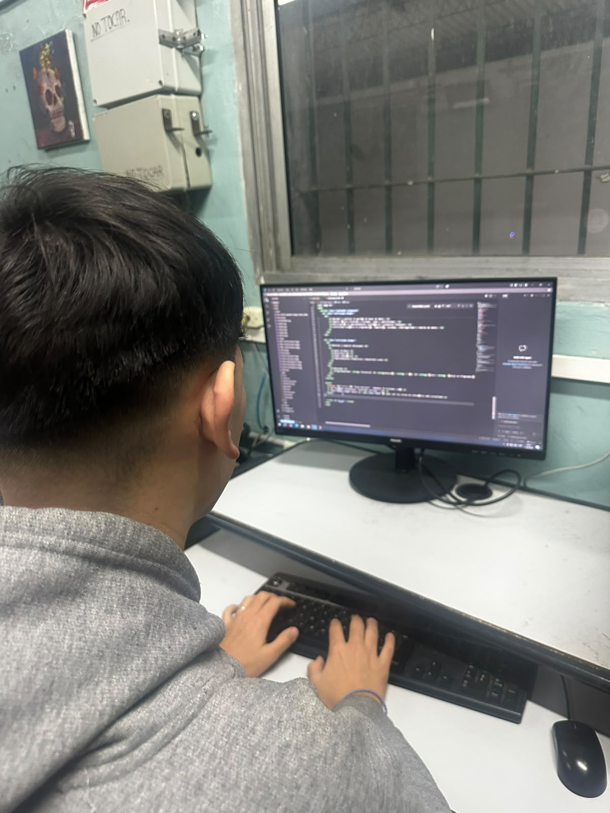

La tecnicatura en Programación orienta la formación hacia el análisis de problemas, el diseño de soluciones algorítmicas, la construcción de software, el trabajo con bases de datos y la integración de aplicaciones en distintos entornos. La propuesta combina teoría, práctica de laboratorio y proyectos donde el estudiante aprende a documentar, probar, corregir y presentar sistemas funcionales.
El egresado puede participar activamente en equipos de desarrollo de software, relevar y analizar las necesidades de los usuarios, construir programas y aplicaciones funcionales, mantener y actualizar sistemas existentes, trabajar con bases de datos y colaborar en la puesta en marcha de soluciones informáticas completas. Está capacitado también para documentar procesos, realizar pruebas de calidad, dar soporte técnico y adaptarse a distintos lenguajes, entornos y metodologías de trabajo propias del área. Además, cuenta con una base sólida de conocimientos que le permite continuar estudios superiores en áreas de software, sistemas, datos o tecnologías de la información.
Modalidad: Presencial
Duración: 7 años
Título: Técnico en Programación
